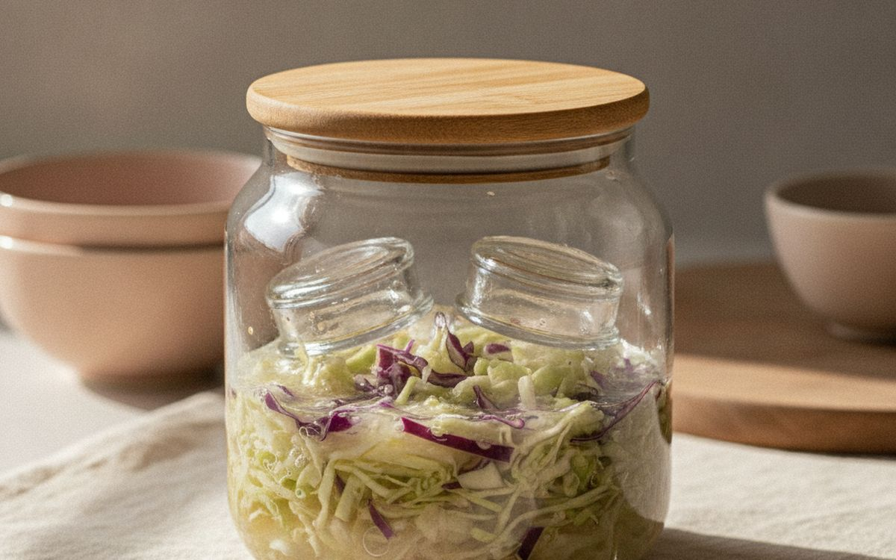
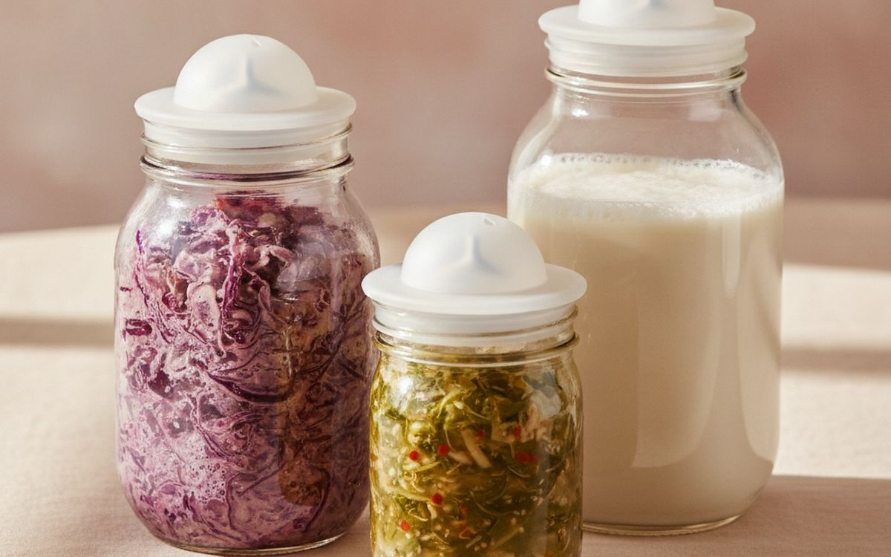
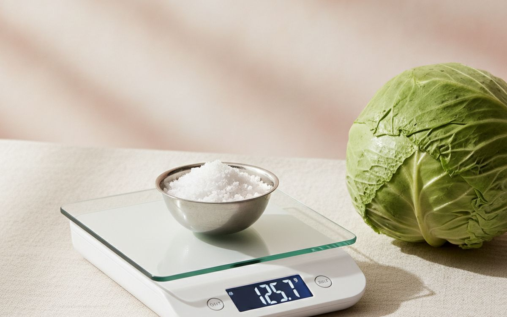
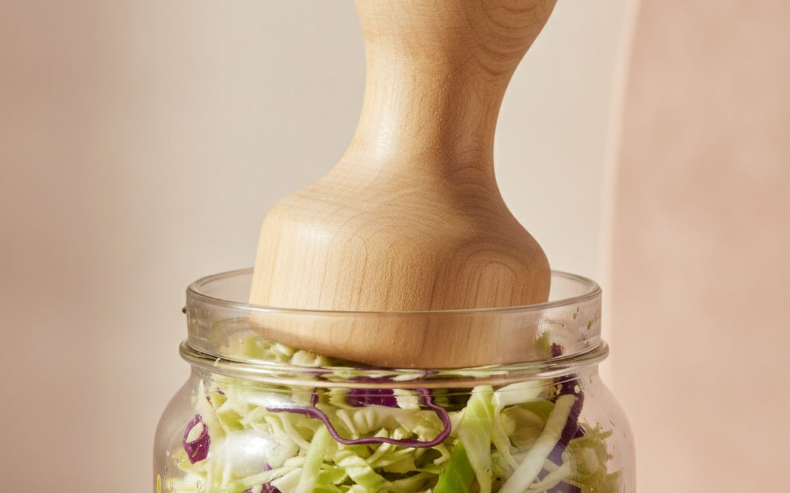
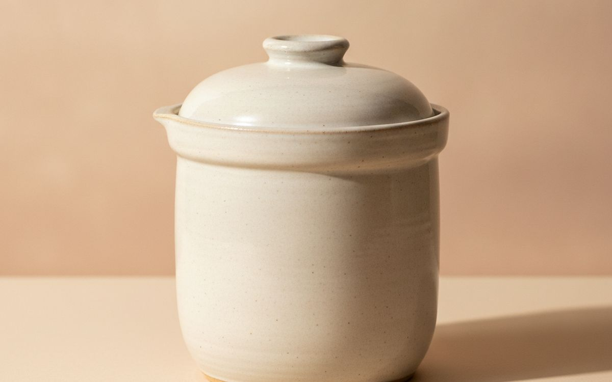
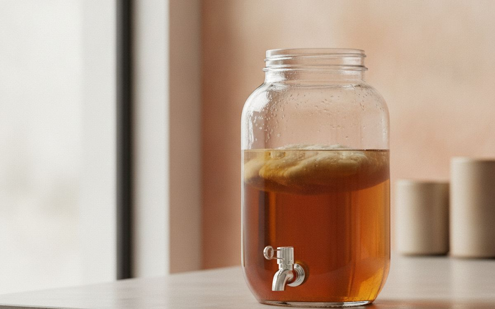
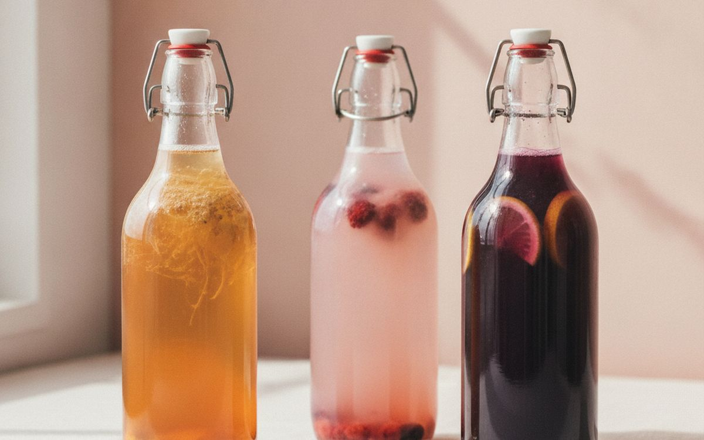

Fermenting vegetables is one of the oldest ways to preserve food, and it needs almost nothing: vegetables, salt and time. What goes wrong is nearly always the same: vegetables float above the brine and grow mould, air gets in, or the salt is off. People throw out a jar, decide fermenting is risky, and stop.
This list is ordered by what prevents that. Weights and airlock lids sit at the top because they solve the most common failure. After that come the tools that make it easier to repeat and scale up.
Prices below are approximate street prices at the time of writing and move around constantly, especially during sale events. Treat them as a rough band for budgeting, not a quote. Always check the live listing before you buy.
Kurz gesagt
Glass fermentation weights
The fix for most failed batches
Hinweis. Die Links auf dieser Seite sind Affiliate-Links. Wenn Sie darüber kaufen, erhalten wir unter Umständen eine Provision ohne Mehrkosten für Sie. Das beeinflusst weder die Auswahl noch die Reihenfolge dieser Liste.
Wie wir ausgewählt haben
These picks come from food safety guidance from US extension services, fermentation authors and long-run owner reports, cross-checked against current retail listings. We have not personally tested every item here. Follow a tested recipe for salt ratios, and when in doubt about a batch, throw it out.
Auf einen Blick
Die Preise sind Näherungswerte zum Zeitpunkt der Erstellung und ändern sich häufig.
Die Empfehlungen

01 · The fix for most failed batchesGlass fermentation weights
The one rule of vegetable fermenting: keep everything under the brine. Anything poking above the surface is exposed to air and can grow mould. Heavy glass discs sized for wide-mouth jars sit on top of the vegetables and hold them down. They are non-reactive, easy to clean and last forever. A zip bag filled with brine works in a pinch, but weights are cleaner and more reliable. The case for it: prevents the most common failure, easy to clean, and lasts forever. The trade-off is real: sized for wide-mouth jars only and glass can chip if dropped into the jar, so weigh that against how often it would actually get used.
$15-25Der Kompromiss: Sized for wide-mouth jars only
Warum es hier steht
- Prevents the most common failure
- Easy to clean
- Lasts forever
Gut zu wissen
- Sized for wide-mouth jars only
- Glass can chip if dropped into the jar

02 · Letting gas out, keeping air outAirlock lids for wide-mouth mason jars
Fermenting vegetables release gas, which builds pressure in a sealed jar. Opening the jar daily to let it out lets air in. Silicone or plastic airlock lids release gas while keeping air out, so you can leave the jar alone. Silicone nipple-style lids are simple and cheap; water airlocks look like homebrew kit and work well too. The case for it: no daily burping, keeps air and fruit flies out, and fits standard jars. The trade-off is real: fits wide-mouth jars only and silicone can hold smells, so weigh that against how often it would actually get used.
$15-25Der Kompromiss: Fits wide-mouth jars only
Warum es hier steht
- No daily burping
- Keeps air and fruit flies out
- Fits standard jars
Gut zu wissen
- Fits wide-mouth jars only
- Silicone can hold smells
03 · Small batchesWide-mouth mason jars
Quart and half-gallon wide-mouth jars are the standard fermenting vessel. They are cheap, easy to pack and clean, and fit the weights and airlock lids above. Start with a few quarts; they suit a small household, and you can run different ferments side by side. The case for it: cheap and easy to find, fits standard lids and weights, and easy to watch the ferment. The trade-off is real: small capacity for big households and glass needs careful handling, so weigh that against how often it would actually get used. Priced around $15-30, it is easy to justify even if it only ends up getting occasional rather than daily use.
$15-30Der Kompromiss: Small capacity for big households
Warum es hier steht
- Cheap and easy to find
- Fits standard lids and weights
- Easy to watch the ferment
Gut zu wissen
- Small capacity for big households
- Glass needs careful handling

04 · Accurate salt ratiosA digital scale
Salt controls which microbes grow. Too little and the wrong ones take over; too much and nothing ferments. Most recipes use about 2 percent salt by weight of the vegetables, which means weighing both. A digital scale to 1 gram makes this easy and repeatable. The case for it: accurate salt ratios, repeatable batches, and useful for all cooking. The trade-off is real: needs batteries and get one that reads to 1g, so weigh that against how often it would actually get used. At $12-25, it earns its place on this list without asking for a big up-front commitment either way.
$12-25Der Kompromiss: Needs batteries
Warum es hier steht
- Accurate salt ratios
- Repeatable batches
- Useful for all cooking
Gut zu wissen
- Needs batteries
- Get one that reads to 1g
05 · Healthy fermentsNon-iodised salt
Iodine and anti-caking agents in table salt can slow fermentation and cloud the brine. Pickling salt, kosher salt or plain sea salt without additives is best. It is cheap and one bag lasts many batches. Check the label for additives. The case for it: better, clearer ferments, cheap, and lasts many batches. The trade-off is real: brands differ in grain size, so weigh rather than measure and avoid iodised table salt, so weigh that against how often it would actually get used. For $5-10, it is a small, low-risk addition to the list rather than a centrepiece purchase you need to think hard about.
$5-10Der Kompromiss: Brands differ in grain size, so weigh rather than measure
Warum es hier steht
- Better, clearer ferments
- Cheap
- Lasts many batches
Gut zu wissen
- Brands differ in grain size, so weigh rather than measure
- Avoid iodised table salt

06 · Packing sauerkrautA wooden tamper
Pressing salted cabbage firmly into a jar releases its juice and removes air pockets, so it makes its own brine. A wooden tamper is shaped for the job and saves your hands. A clean rolling pin end works too, but a tamper fits jars better. The case for it: makes natural brine easier, removes air pockets, and cheap. The trade-off is real: a single-purpose tool and wood needs drying after washing, so weigh that against how often it would actually get used. Priced around $10-15, it is easy to justify even if it only ends up getting occasional rather than daily use.
$10-15Der Kompromiss: A single-purpose tool
Warum es hier steht
- Makes natural brine easier
- Removes air pockets
- Cheap
Gut zu wissen
- A single-purpose tool
- Wood needs drying after washing

07 · Big batchesA ceramic fermentation crock
For households that eat a lot of sauerkraut or kimchi, a water-seal crock ferments several pounds at once. The water channel around the lid lets gas out and keeps air out. It is the traditional approach and very reliable. They are heavy and expensive to ship, so check delivery costs. The case for it: large batches in one go, water seal works well, and lasts for decades. The trade-off is real: heavy and costly to ship and check the glaze is lead-free and food-safe, so weigh that against how often it would actually get used.
$50-120Der Kompromiss: Heavy and costly to ship
Warum es hier steht
- Large batches in one go
- Water seal works well
- Lasts for decades
Gut zu wissen
- Heavy and costly to ship
- Check the glaze is lead-free and food-safe

08 · Kombucha and water kefirA kombucha brewing jar with a tap
Kombucha needs a wide jar, a breathable cloth cover and a SCOBY starter. A jar with a tap lets you draw off finished kombucha without disturbing the culture. Choose glass or food-grade stainless taps, not cheap plastic ones that can leak. Keep it out of direct sunlight. The case for it: easy continuous brewing, no disturbing the culture, and good for water kefir too. The trade-off is real: cheap taps leak and needs a starter culture separately, so weigh that against how often it would actually get used. For $25-45, it is a small, low-risk addition to the list rather than a centrepiece purchase you need to think hard about.
$25-45Der Kompromiss: Cheap taps leak
Warum es hier steht
- Easy continuous brewing
- No disturbing the culture
- Good for water kefir too
Gut zu wissen
- Cheap taps leak
- Needs a starter culture separately

09 · Carbonating drinksSwing-top bottles
A second ferment in sealed bottles makes kombucha and ginger bug drinks fizzy. Swing-top bottles hold pressure and reseal easily. Use proper pressure-rated bottles, not decorative ones, and chill before opening, because over-fermented bottles can build a lot of pressure. The case for it: makes naturally fizzy drinks, reusable, and easy to seal. The trade-off is real: can over-carbonate and burst if left warm and replace worn rubber seals, so weigh that against how often it would actually get used. Priced around $20-35, it is easy to justify even if it only ends up getting occasional rather than daily use.
$20-35Der Kompromiss: Can over-carbonate and burst if left warm
Warum es hier steht
- Makes naturally fizzy drinks
- Reusable
- Easy to seal
Gut zu wissen
- Can over-carbonate and burst if left warm
- Replace worn rubber seals
10 · Checking aciditypH test strips
A healthy vegetable ferment gets more acidic as it goes, and that acidity is what keeps it safe. Test strips give a rough reading, which is reassuring for beginners and useful for kombucha. Most tested recipes are safe without testing when salt and submersion are right, so this is optional. The case for it: reassurance for beginners, useful for kombucha, and cheap. The trade-off is real: strips give only a rough reading and not a substitute for a tested recipe, so weigh that against how often it would actually get used. At $8-15, it earns its place on this list without asking for a big up-front commitment either way.
$8-15Der Kompromiss: Strips give only a rough reading
Warum es hier steht
- Reassurance for beginners
- Useful for kombucha
- Cheap
Gut zu wissen
- Strips give only a rough reading
- Not a substitute for a tested recipe
Häufige Fragen
Is home fermenting safe?
Vegetable fermenting with the right salt and vegetables kept under brine has a good safety record. Follow tested recipes and throw out anything with fuzzy mould, strange colours or a rotten smell.
What is the white film on top?
Often kahm yeast, which is harmless but can taste off. Skim it. Fuzzy, coloured mould means throw it out.
How long does sauerkraut take?
Usually one to four weeks at room temperature, depending on warmth and taste. Taste as you go.
What should I ferment first?
Sauerkraut. It is just cabbage and salt, and it teaches the basics.
Angebote heute
Sieh, was gerade reduziert ist.
Angebote →← Alle Ratgeber
Als AliExpress-Affiliate verdienen wir an qualifizierten Käufen. Preise und Verfügbarkeit entsprechen dem Stand der Veröffentlichung und können sich ändern.